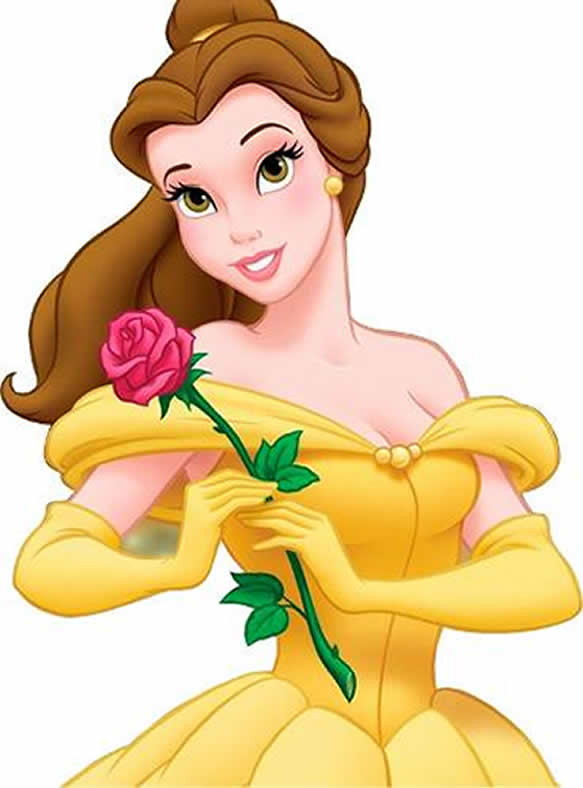

Em A Bela e a Fera, Bela tem o pai capturado pela Fera e decide entregar sua vida ao estranho ser em troca da liberdade dele. No castelo, ela conhece objetos mágicos e descobre que a Fera é, na verdade, um príncipe que precisa de amor para voltar à forma humana12. O longa é centrado em um príncipe que é transformado em uma Fera e uma jovem mulher chamada Bela que ele aprisiona em seu castelo3. Bela deseja viajar e viver aventuras muito maiores do que o lugar onde vive pode oferecer

